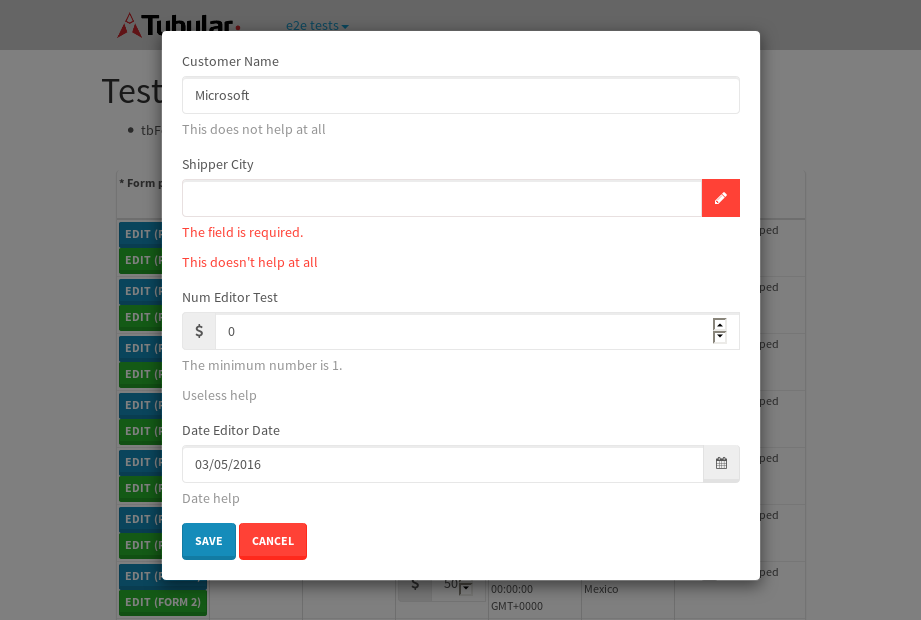
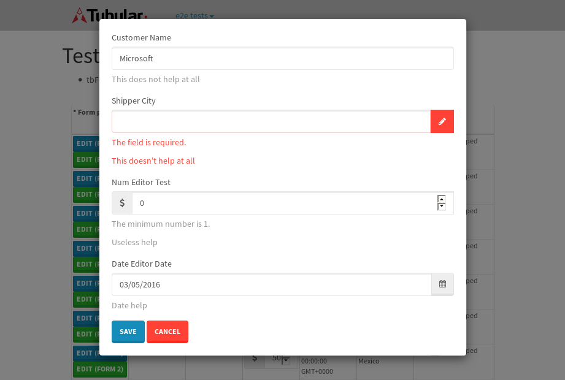

tbColumn.Grid Sorting - 24.269sTests: 5Skipped: 0Failures: 0 should sort data in ascending order then on descending order when sorting by Order Id column - 5.318sTests passed: 100.00%should order data in ascending order when click-sorting an unsorted text column - 4.114sTests passed: 100.00%should order data in descending order when click-sorting an ascending-sorted text column - 5.096sTests passed: 100.00%should order data in ascending order when click-sorting an unsorted date column - 4.396sTests passed: 100.00%should order data in descending order when click-sorting twice an unsorted date column - 5.343sTests passed: 100.00%
tbEmptyForm - 1.819sTests: 3Skipped: 0Failures: 0 should have an empty required field - 0.292sTests passed: 100.00%should not be able to click on save - 0.028sTests passed: 100.00%should load default value for numeric field - 0.036sTests passed: 100.00%
Tubular Filters.tbColumnFilter - 94.49sTests: 12Skipped: 0Failures: 0 should cancel filtering when clicking outside filter-popover - 7.872sTests passed: 100.00%should disable Value text-input for "None" filter - 5.552sTests passed: 100.00%should disable apply button for "None" filter - 5.883sTests passed: 100.00%should decorate popover button when showing data is being filtered for its column - 11.116sTests passed: 100.00%should correctly filter data for the "Equals" filtering option - 7.413sTests passed: 100.00%should correctly filter data for the "Not Equals" filtering option - 7.167sTests passed: 100.00%should correctly filter data for the "Contains" filtering option - 7.214sTests passed: 100.00%should correctly filter data for the "Not Contains" filtering option - 7.162sTests passed: 100.00%should correctly filter data for the "Starts With" filtering option - 6.17sTests passed: 100.00%should correctly filter data for the "Not Starts With" filtering option - 6.072sTests passed: 100.00%should correctly filter data for the "Ends With" filtering option - 5.862sTests passed: 100.00%should correctly filter data for the "Not Ends With" filtering option - 5.969sTests passed: 100.00%
Tubular Filters.tbColumnDateTimeFilter - 123.927sTests: 12Skipped: 0Failures: 0 should cancel filtering when clicking outside filter-popover - 6.235sTests passed: 100.00%should disable Value text-input for "None" filter - 5.498sTests passed: 100.00%should disable apply button for "None" filter - 5.626sTests passed: 100.00%should clear filtering when clicking on Clean button - 16.427sTests passed: 100.00%should decorate popover button when showing data is being filtered for its column - 10.927sTests passed: 100.00%should correctly filter data for the "Equals" filtering option - 6.147sTests passed: 100.00%should correctly filter data for the "Not Equals" filtering option - 6.608sTests passed: 100.00%should correctly filter data for the "Between" filtering option - 11.235sTests passed: 100.00%should correctly filter data for the "Greater-or-equal" filtering option - 11.37sTests passed: 100.00%should correctly filter data for the "Greater" filtering option - 10.927sTests passed: 100.00%should correctly filter data for the "Less-or-equal" filtering option - 10.743sTests passed: 100.00%should correctly filter data for the "Less" filtering option - 11.057sTests passed: 100.00%
Tubular Filters.tbColumnOptionsFilter - 78.17sTests: 3Skipped: 0Failures: 0 should cancel filtering when clicking outside filter-popover - 7.512sTests passed: 100.00%should decorate popover button when showing data is being filtered for its column - 10.764sTests passed: 100.00%should filter column-elements in accordance to the selected filter when selecting a single option - 48.048sTests passed: 100.00%
Tubular Filters.tbTextSearch - 43.763sTests: 5Skipped: 0Failures: 0 min-chars is not set - 0.09sTests passed: 100.00%should filter data in searchable-column customer name to matching inputted text, starting from 3 characters - 5.934sTests passed: 100.00%should filter data in searchable-column shipper city to matching inputted text, starting from 3 characters - 11.049sTests passed: 100.00%should show clear button when there is inputted text only - 5.587sTests passed: 100.00%should clear filtering when clicking clear button - 15.432sTests passed: 100.00%
tbForm related components.tbCheckboxField - 4.465sTests: 2Skipped: 0Failures: 0 should save changes on "SAVE" - 1.764sTests passed: 100.00%should discard changes on "CANCEL" - 1.451sTests passed: 100.00%
tbForm related components.tbDropDownEditor - 6.615sTests: 5Skipped: 0Failures: 0 should set initial input value to the value of "value" attribute when defined - 0.709sTests passed: 100.00%should show the component name value in a label field when "showLabel" attribute is true - 1.009sTests passed: 100.00%should show a help field equal to this attribute, is present - 0.883sTests passed: 100.00%should submit modifications to item/server when clicking form "Save" - 2.307sTests passed: 100.00%should NOT submit modifications to item/server when clicking form "Cancel" - 1.162sTests passed: 100.00%
tbForm related components.tbTextArea - 9.724sTests: 7Skipped: 0Failures: 0 should set initial input value to the value of "value" attribute when defined - 0.745sTests passed: 100.00%should be invalidated when the number of chars is not in the range of "min" and "max" attributes - 1.6sTests passed: 100.00%should show the component name value in a label field when "showLabel" attribute is true - 0.754sTests passed: 100.00%should show a help field equal to this attribute, is present - 0.869sTests passed: 100.00%should require the field when the attribute "required" is true - 0.954sTests passed: 100.00%should submit modifications to item/server when clicking form "Save" - 2.512sTests passed: 100.00%should NOT submit modifications to item/server when clicking form "Cancel" - 1.536sTests passed: 100.00%
tbForm related components.tbDateEditor - 8.382sTests: 6Skipped: 0Failures: 0 should set initial date value to the value of "value" attribute when defined - 0.702sTests passed: 100.00%should be invalidated when the date is not in the range of "min" and "max" attributes - 1.227sTests passed: 100.00%should show the component name value in a label field when "showLabel" attribute is true - 0.619sTests passed: 100.00%should show a help field equal to this attribute, is present - 0.658sTests passed: 100.00%should submit modifications to item/server when clicking form "Save" - 1.884sTests passed: 100.00%should NOT submit modifications to item/server when clicking form "Cancel" - 1.758sTests passed: 100.00%
tbForm related components.tbTypeaheadEditor - 7.717sTests: 7Skipped: 0Failures: 7 should show an options list when there is an API-info/component entered-data - 0.841sFailed: each key must be a number of string; got undefined✗Failed: each key must be a number of string; got undefined✗Tests passed: 50.00%should select the option clicked - 0.967sFailed: each key must be a number of string; got undefined✗Failed: each key must be a number of string; got undefined✗Tests passed: 33.33%should show a "delete" button when an option/match is selected, and delete the option if button is clicked - 1.36sFailed: each key must be a number of string; got undefined✗Failed: each key must be a number of string; got undefined✗Tests passed: 50.00%should show a label value equal to the component name when "showLabel" attribute is true - 0.694sFailed: each key must be a number of string; got undefined✗Failed: each key must be a number of string; got undefined✗Tests passed: 33.33%should require a value when "require" attribute is true - 1.043sFailed: each key must be a number of string; got undefined✗Failed: each key must be a number of string; got undefined✗Tests passed: 33.33%should submit modifications to item/server when clicking form "Save" - 1.414sFailed: each key must be a number of string; got undefined✗Failed: each key must be a number of string; got undefined✗Tests passed: 33.33%should NOT submit modifications to item/server when clicking form "Cancel" - 0.888sFailed: each key must be a number of string; got undefined✗Expected 'Portland, OR, USA' to match 'Guadalajara, JAL, Mexico'.✗Failed: each key must be a number of string; got undefined✗Tests passed: 0.00%
tbForm related components.tbSimpleEditor - 10.535sTests: 9Skipped: 0Failures: 0 should set initial input value to the value of "value" attribute when defined - 0.644sTests passed: 100.00%should be invalidated when the number of chars is not in the range of "min" and "max" attributes - 1.352sTests passed: 100.00%should show the component name value in a label field when "showLabel" attribute is true - 0.715sTests passed: 100.00%should set input placeholder to the value of "placeholder" attribute - 0.945sTests passed: 100.00%should validate the control using the "regex" attribute, if present - 0.81sTests passed: 100.00%should show a help field equal to this attribute, is present - 0.663sTests passed: 100.00%should require the field when the attribute "required" is true - 0.803sTests passed: 100.00%should submit modifications to item/server when clicking form "Save" - 2.463sTests passed: 100.00%should NOT submit modifications to item/server when clicking form "Cancel" - 1.395sTests passed: 100.00%
tbForm related components.tbNumericEditor - 9.803sTests: 7Skipped: 0Failures: 0 should set initial component value to the value of "value" attribute when defined - 0.771sTests passed: 100.00%should be invalidated when the entered number is not in the range of "min" and "max" attributes - 1.309sTests passed: 100.00%should show the component name value in a label field when "showLabel" attribute is true - 0.805sTests passed: 100.00%should show a help field equal to this attribute, is present - 0.746sTests passed: 100.00%should require the field when the attribute "required" is true - 0.987sTests passed: 100.00%should submit modifications to item/server when clicking form "Save" - 3.108sTests passed: 100.00%should NOT submit modifications to item/server when clicking form "Cancel" - 1.433sTests passed: 100.00%
tbForm Connection Error NoModelKey - 2.567sTests: 1Skipped: 0Failures: 0 tbForm connection error functionality - 0.661sTests passed: 100.00%
tbForm Connection Error NoServerUrl - 2.733sTests: 1Skipped: 0Failures: 0 tbForm connection error functionality - 0.696sTests passed: 100.00%
tbGridComponents - 8.952sTests: 6Skipped: 0Failures: 0 should add item with newRow method - 2.819sTests passed: 100.00%should add item with newRow method and cancel action - 0.468sTests passed: 100.00%should update item with tbSaveButton - 1.197sTests passed: 100.00%should NOT update item on cancel Update action - 1.172sTests passed: 100.00%should remove item with tbRemoveButton - 1.015sTests passed: 100.00%should NOT remove item on cancel Remove action - 0.89sTests passed: 100.00%
tbGridPager.navigation buttons - 3.229sTests: 1Skipped: 0Failures: 0 should perform no action when clicking on the numbered navigation button corresponding to the current-showing results page - 0.671sTests passed: 100.00%
tbGridPager.navigation buttons.first/non-last results page related functionallity - 0.896sTests: 2Skipped: 0Failures: 0 should disable "first" and "previous" navigation buttons when in first results page - 0.169sTests passed: 100.00%should enable "last" and "next" navigation buttons when in a results page other than last - 0.727sTests passed: 100.00%
tbGridPager.navigation buttons.last/non-first results page related functionallity - 1.662sTests: 2Skipped: 0Failures: 0 should disable "last" and "next" navigation buttons when in last results page - 0.981sTests passed: 100.00%should enable "first" and "previous" navigation buttons when in a results page other than first - 0.681sTests passed: 100.00%
tbGridPager.page navigation - 4.386sTests: 5Skipped: 0Failures: 0 should go to next results page when clicking on next navigation button - 1.36sTests passed: 100.00%should go to previous results page when clicking on previous navigation button - 1.194sTests passed: 100.00%should go to last results page when clicking on last navigation button - 0.643sTests passed: 100.00%should go to first results page when clicking on first navigation button - 0.62sTests passed: 100.00%should go to corresponding results page when clicking on a numbered navigation button - 0.569sTests passed: 100.00%
tbGridPagerInfo - 6.332sTests: 2Skipped: 0Failures: 0 should show text in accordance to numbered of filter rows and current results-page - 2.987sTests passed: 100.00%should show count in footer - 0.779sTests passed: 100.00%
tbPageSizeSelctor - 15.593sTests: 4Skipped: 0Failures: 0 should filter up to 10 data rows per page when selecting a page size of "10" - 3.493sTests passed: 100.00%should filter up to 20 data rows per page when selecting a page size of "20" - 2.564sTests passed: 100.00%should filter up to 50 data rows per page when selecting a page size of "50" - 4.026sTests passed: 100.00%should filter up to 100 data rows per page when selecting a page size of "100" - 3.779sTests passed: 100.00%
tbRowSelectable - 10.253sTests: 2Skipped: 0Failures: 0 selected rows - 5.871sTests passed: 100.00%unselected rows - 2.903sTests passed: 100.00%
tbSingleForm - 14.943sTests: 8Skipped: 1Failures: 0 should load correct info - 0.001s***Skipped***Tests passed: 0%should change customer name - 2.03sTests passed: 100.00%should save it - 2.465sTests passed: 100.00%should clear the inputs - 1.777sTests passed: 100.00%should update - 3.215sTests passed: 100.00%should reset editor - 1.742sTests passed: 100.00%should not save if not Changes - 1.724sTests passed: 100.00%should not be able to click on save - 1.989sTests passed: 100.00%

{kind=link}
{kind=link}
{kind=link}
{kind=link}
{kind=link}
{kind=link}